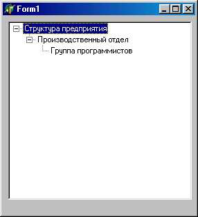
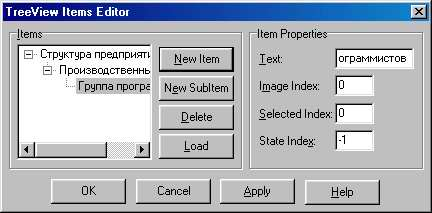
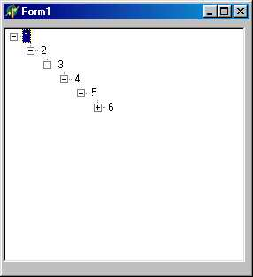
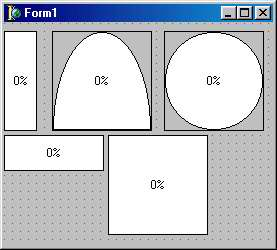
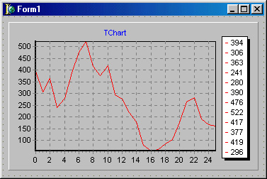
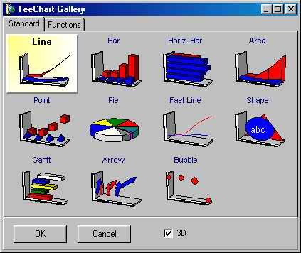

TTreeView - дерево иерархии
Компонент TTreeView служит для показа ветвящихся иерархических структур, таких как дерево наследования объектов или файловая структура диска. Он содержит связанные узлы, каждый из которых может содержать пиктограмму, текст и произвольный объект (подобно спискам TStringList - см. п. 14.3.2). Любой узел может иметь собственный список подузлов (рис. 18.27), которые можно раскрывать или закрывать щелчком мыши на пиктограмме узла.

Рис. 18.27. Пример использования компонента TTreeView
Для наполнения списка на этапе конструирования программы нужно щелкнуть по компоненту правой кнопкой мыши и выбрать Items Editor., либо щелкнуть по нему дважды, либо, наконец, щелкнуть по кнопке в свойстве Items - во всех случаях на экране появится окно редактора компонента (рис. 18.28).

Рис. 18.28. Редактор компонента
Чтобы начать наполнение, щелкните по кнопке New item и введите связанный с узлом текст в поле Text. С помощью image index панели item properties устанавливается индекс связанной с узлом пиктограммы, с помощью selected index - индекс пиктограммы для выбранного узла. Для ввода подузла любого уровня сначала нужно щелкнуть в окошке Items по узлу, который должен стать родительским, и лишь затем - на кнопке New subitem.
Для ввода списка в режиме прогона программы широко используется центральное свойство компонента - items типа TTreeNodes, открывающее индексированный доступ ко всем узлам списка. Каждый узел описывается классом TTreeNode, имеющим свои собственные методы и свойства. В частности, его свойство item содержит список всех подузлов данного узла; с помощью многочисленных методов свойства TTreeview. items к этому списку можно добавить новый подузел, а с помощью метода TTreeNode. MoveTo - переместить узел в любую позицию дерева иерархии.
Следующий обработчик события oncreate формы создал рис. 18.29:
procedure TFormI.PormCreate(Sender: TObject) ;
var
k: Integer;
begin with TreeViewl do
begin
// Добавляем корневой узел
Items.Add(NIL,'Корень') ;
//Добавляем 10 вложенных узлов
for k := 1 to 10 do
Items.AddChild(Items[k-1],IntToStr(k))
end
end;

Puc. 18.29. Создание подузлов на этапе прогона программы
Свойства компонента TTreeview:
|
lean;TBorderStyle = bsNone..bsSingle; property BorderStyle: TBorderStyle; |
Определяет стиль рамки, охватывающей компонент: bsNone - нет рамки; bsSingle - рамка толщиной в 1 пиксель |
|
property ChangeDelay: Integer; |
Указывает задержку (в миллисекундах) перед раскрытием узла |
|
property DropTarget: TTreeNode; |
Указывает узел, который может служить приемником операций Drag&Drop |
|
property HideSelection:Boolean; |
Указывает, будет ли убираться выделение узлов, когда компонент теряет фокус ввода |
|
property Images: TImageList; |
Содержит набор изображений, которые будут использоваться при прорисовке узлов |
|
property Indent: Integer; |
Определяет отступ в пикселях от левого угла узла для всех его подузлов |
|
property Items: TTreeNodes; |
Открывает доступ к любому узлу по его индексу. Индексация начинается с нуля и соответствует просмотру всех узлов полностью раскрытого списка |
|
property MultiSelect: Boo lean; |
Разрешает/запрещает одновременный выбор несколь ких узлов |
|
type TMultiSelectStyles = (msControlSel-ect, msShift Select, msVisibleOnly, msSiblingOnly) ; TMultiSelectStyle = set of TMultiSelectStyles; property MultiSelectStyle: TMultiSelect-Style default [msControlSelect]; |
Определяет способ выбора нескольких узлов: msControiselect - с нажатой и удерживаемой клавишей Ctrl для выбора узлов в произвольном порядке; msShiftSelect - с нажатой и удерживаемой клавишей Shift для выбора сплошного диапазона; msVisibleOnly - подобно msShiftSelect, но в диапазон не включаются дочерние нераскрытые узлы; msSiblingOnly - подобно msShiftSelect, но в диапазон включаются только узлы одного уровня |
|
property Readonly: Boolean; |
Запрещает/разрешает редактирование надписей в узлах |
|
property RightClickSelect: Boolean; |
Разрешает выбор узлов правой кнопкой мыши |
|
property Selected: TTreeNode; |
Содержит список всех выбранных узлов или nil, если таких нет |
|
property SelectionCount: Cardinal; |
Содержит количество выбранных узлов |
|
property Selections[Index: Integer]: TTreeNode; |
Обеспечивает индексированный доступ к выбранным узлам |
|
property RowSelect: Boolean; |
Разрешает цветовыделение линий выбранных узлов. Игнорируется, если showLinesFalse |
|
property ShowButfcons: Boolean; |
Разрешает/запрещает показ стандартных кнопок раскрытия подузлов. По умолчанию содержит True. Если False, узел раскрывается двойным щелчком мыши |
|
property ShowLines: Boolean; |
Разрешает/запрещает показ линий |
|
property ShowRoot: Boolean; |
Разрешает/запрещает показ линий, идущих от самого верхнего уровня иерархии. Игнорируется, если ShowLines=False |
|
TSortType = (stNone, stData, stText, stBoth) ; property SortType: TSort Type; |
Указывает способ сортировки узлов: stNone - нет сортировки; stData - сортировка по данным; stText - сортировка по тексту надписей; stBoth - сортировка по тексту и по данным. См. также событие OnCompare |
|
property Topitern: , TTreeNode; |
Определяет корневой узел |
|
Методы компонента: |
|
|
function AlphaSort: Boolean; TTVCompare = function (IParamI, lParam2, IParamSort: Longint) Integer stdcall; tfunction CustomSort(SortProc: TTVCompare; Data: Longint): Boolean; |
Сортирует узлы по тексту и возвращает True, если сортировка прошла успешно Определяет нестандартную сортировку с : помощью функции SortProc. Эта функция должна рассматривать IParamI и lParam2 : как объекты TTreeNode и возвращает отрицательное число, если lParaml<lParam2; ноль, если IParamel^lParamS; положитель ное число, если lParaml>lParam2 |
|
procedure FullCollapse; |
Прячет все узлы, кроме узлов самого верх него уровня иерархии |
|
Procedure FullExpand; |
Показывает все узлы дерева иерархии |
|
function GetNodeAt(X, Y: Integer) : TTreeNode; |
Возвращает узел, располагающийся в указанной точке, или nil, если точка не принадлежит ни одному узлу |
|
function IsEditing: Boolea' |
Возвращает True, если пользователь редактирует какой-либо узел |
|
procedure LoadPromFile(const FileName: String); |
Загружает дерево иерархии из файла |
|
procedure SaveToFile(const File Name: String) ; |
Сохраняет в файле дерево иерархии |
|
procedure SaveToStream(Stream: TStream) ; |
Сохраняет в потоке данных дерево иерархии события: С компонентом связаны такие |
|
TTVChangedEvent = procedure(Sender: TObject; Node: TTreeNode) of object; property OnChange: TTVChangedE vent; |
Возникает при смене состояния выбора у одного из узлов. Node - узел, который изменил состояние |
|
TTVChangingEvent = procedure( Sender: TObject; Node: TTreeNode; var AllowChange: Boolean) of objectproperty OnChangir.g: TTVChang ingEvent; |
Возникает перед сменой состояния выбора у одного из узлов. Node - узел, который будет выбран. Обработчик в параметре AllowChange разрешает или запрещает выбор узла |
|
TTVExpandedEvent = procedure( Sender: TObject; Node: TTreeNode) of object;property OnCollapsed: TTVExpand edEvent; |
Возникает при закрытии списка подузлов узла Node |
|
TTVCollapsingEvent = procedure( Sender: TObject; Node: TTreeNode; var AllowCollapse: Boolean) of object; property OnCollapsing: TTVCollapsingEvent; |
Возникает перед закрытием списка подуз лов узла Node. В параметре AllowCollapse обработчик разрешает или запрещает закрыть список |
|
TTVCompareEvent = procedure( Sender: TObject; Nodel, Node2: TTreeNode; Data: Integer; var Compare: Integer) of object; property OnCompare: TTVCom pareEvent; |
Возникает при сравнении двух узлов Nodel И Node2. В параметре Compare обработчик должен вернуть отрицательное число, если Nodel<Node2; ноль, если Model=Node2; положительное число, если Nodel>Node2 |
|
TTVExpandedEvent = procedure( Sender: TObject; Node: TTreeNode) of object; property OnDeletion: TTVExpand edEvent; |
Возникает при удалении узла Node из дерева иерархии |
|
TTVEditedEvent = procedure(Sender: TObject; Node: TTreeNode; var S: String) of object; property OnEdited: TTVEditedEvent; |
Возникает при завершении редактирования надписи в узле Node: S - новая надпись |
|
TTVExpandedEvent = procedure( Sender: TObject; Node: TreeNode) of object; property OnExpanded: TTVExpand edEvent; |
Возникает при распахивании списка подузлов узла Node |
|
TTVExpandingEvent = procedure( Sender: TObject; Node: TTreeNode; var AllowExpansion: Boolean) of object; property OnExpanding: TTVExpand ingEvent; |
Возникает перед открытием списка подузлов узла Node. В параметре AllowExpansion обработчик разрешает или запрещает открыть список |
|
TTVExpandedEvent = procedure( Sender: TObject; Node: TreeNode) of object;property OnGetImageIndex: TTVEx pandedEvent; |
Возникает при необходимости получения индекса изображения для прорисовки узла Node в обычном состоянии |
|
TVExpandedEvent == procedure( Sender: TObject; Node: TTreeNode) of object; property OnGetSelectedIndex: TTVExpandedEvent; |
Возникает при необходимости получения индекса изображения для прорисовки узла Node в выбранном состоянии |
При программном заполнении списка следует пользоваться свойством TTreeView. Items класса TTreeNodes.
Свойства класса TTreeNodes:
|
property Count: Integer; property Item[Index: Integer]: TTreeNode; default-property Owner: TCustomTreeView; |
Количество узлов, входящих в items Открывает индексированный доступ к узлам Содержит ссылку на родительский список |
|
Методы класса TTreeNodes: |
|
|
function Add(Node: TTreeNode; const S: String): TTreeNode; function AddChild(Node: TTreeNode; const S: String): TTreeNode; function AddChildFirst(Node: TTreeNode; const S: String): TTreeNode; function AddChildObject(Node: TTreeNode; const S: String; Ptr: Pointer): TTreeNode; function AddChildObjectFirst( Node: TTreeNode; const S: String; Ptr: Pointer): TTreeNode; |
Добавляет узел в конец того списка, в котором зарегистрирован узел Node. Если Node=NlL, добавляется корневой узел для всего компонента Добавляет узел в конец списка item дочерних узлов узла Node Добавляет узел в начало списка Item дочерних узлов узла Node Добавляет узел и данные в конец списка item дочерних узлов узла Node. На данные ссылается указатель Ptr. Связанная с данными область памяти не освобождается автоматически при уничтожении списка Добавляет узел и данные в начало списка item дочерних узлов узла Node. На данные ссылается указатель Ptr. Связанная с данными область памяти не освобождается автоматически при уничтожении списка |
|
function AddFirst(Node: TTreeNode; const S: String): TTreeNode; |
Добавляет узел в начало того списка, в котором зарегистрирован узел Node |
|
function AddObject(Node: TTreeNode; const S: String; Ptr: Pointer): TTreeNode; |
Добавляет узел и данные в конец того же списка, в котором зарегистрирован узел Node. На данные ссылается указатель Ptr. Связанная с данными область памяти не освобождается автоматически при уничтожении списка |
|
function AddObjectFirst(Node: TTreeNode; const S: String; Ptr: Pointer): TTreeNode; |
Добавляет узел и данные в начало того же списка, в котором зарегистрирован узел Node. На данные ссылается указатель Ptr. Связанная с данными область памяти не освобождается автоматически при уничтожении списка |
|
procedure Assign(Source: TPersistent) ; |
Связывает список текущего компонента со списком компонента Source |
|
procedure BeginUpdate; |
Блокирует обновление экрана до тех пор, пока не будет выполнен метод EndUpdate. Используется при одновременной вставке нескольких элементов списка для предотвращения мерцания экрана |
|
procedure Clear; |
Очищает список всех узлов и подузлов компонента |
|
procedure Delete(Node: TTreeNode); |
Уничтожает узел Nods |
|
procedure EndUpdate; |
Отменяет действие метода BeginUdate |
|
function GetFirstNode: TTreeNode; |
Возвращает самый первый узел в списке Items[0] |
|
function GetNode(Itemid: HTreeItem): TTreeNode; |
Возвращает узел по его идентификатору Itemid |
|
function Insert(Node: TTreeNode; const S: String): TTreeNode; |
Вставляет узел непосредственно перед узлом Node |
|
function InsertObj ect(Node: TTreeNode; const S: String; Ptr: Pointer): TTreeNode; |
Вставляет узел и данные непосредственно перед узлом Node |
Как уже отмечалось, каждый узел класса TTreeNode имеет свой набор методов, свойств и событий.
Свойства TTreeNode:
|
property Absolutelndex: Integer; |
Возвращает абсолютный индекс узла (с учетом всех подузлов) |
|
property Count: Integer; |
Содержит количество подузлов в списке Item |
|
property Cut: Boolean; |
Вырезает узел и помещает его в clipboard |
|
property Data: Pointer; |
Указывает на связанные с узлом данные |
|
property Deleting: Boolean; |
Содержит True, если для узла вызван De-story |
|
property DropTarget: Boolean; |
Содержит True, если узел может служить приемником операции Drag&Drop |
|
property Expanded: Boolean; |
Содержит True, если узел распахнут |
|
property Focused: Boolean; |
Содержит True, если узел сфокусирован |
|
property HasChildren: Boolean; |
Содержит True, если узел имеет дочерние узлы |
|
property Imagelndex: TImageIndex; |
Содержит индекс связанной с узлом пиктограммы |
|
property Index: Longint; |
Содержит индекс узла в списке дочерних узлов его родительского узла |
|
property IsVisible: Boolean; |
Содержит True, если узел виден |
|
property Item[Index: Integer]: TTreeNode; |
Открывает индексированный доступ ко всем дочерним узлам |
|
property Itemid: HTreeItem; |
Содержит уникальный Windows-дескриптор узла |
|
property Level: Integer; |
Содержит иерархический уровень узла |
|
property Overlaylndex: Integers- |
Содержит индекс оверлейной пиктограммы. Оверлейная пиктограмма вычерчивается поверх основной, чтобы, например, указать, что узел стал недоступен |
|
property Owner: TTreeNodes; |
Содержит ссылку на владельца данного узла |
|
property Parent: TTreeNode; |
Содержит ссылку на родительский узел |
|
property Selected: Boolean; |
Содержит True, если узел выделен цветом |
|
property Selectedlndex: Integer; |
Содержит номер пиктограммы для выделенного узла |
|
property Text: Strings- |
Содержит текст узла |
|
property TreeView: TCustomTree- View; |
Содержит ссылку на компонент TreeView, к которому принадлежит узел |
Методы класса TTreeNode:
|
function AlphaSort: Boolean; |
Сортирует узлы по алфавиту свойств Text и возвращает True в случае успеха |
|
procedure Assign(Source: TPersis tent); override; |
Связывает список подузлов с источником Source |
|
procedure Collapse(Recurse: Boolean) ; |
Закрывает все узлы (Recource=True) или только распахнутые(Resource=False) |
|
type TTVCompare = function( IParamI, lParam2, IParamSort: Longint): Integer stdcall; func tion CustomSort(SortProc: TTVCom pare; Data: Longint): Boolean; |
Реализует нестандартную сортировку узлов |
|
procedure Delete; |
Удаляет текущий узел |
|
procedure DeleteChildren; |
Удаляет дочерние узлы |
|
function DisplayRect(TextOnly: Boolean): TRect; |
Возвращает очерчивающий прямоугольник узла. Если TextOnly=True - возвращает очерчивающий прямоугольник текста |
|
function EditText: Boolean; |
Переводит текст узла в режим редактирования |
|
procedure EndEdit(Cancel Boo lean) ; |
Заканчивает редактирование текста и со храняет его изменения, если Cancel=False |
|
procedure Expand(Recurse: Boo lean) ; |
Открывает узел (и его подузлы, если Recurce=True) |
|
function GetFirstChild: TTreeNode; |
Возвращает ссылку на первый подузел или nil, если нет подузлов |
|
function GetLastChild: TTreeNode; |
Возвращает ссылку на последний подузел или nil, если нет подузлов |
|
function GetNext: TTreeNode; function GetNextChild(Value: TTreeNode): TTreeNode; |
Возвращает ссылку на очередной подузел dозвращает ссылку на подузел после value (или nil, если такового нет). |
|
function GetNextSibling: TTreeNode; |
Возвращает ссылку на очередной узел в том же списке. |
|
function GetNextVisible: TTreeNode; |
Возвращает ссылку на очередной видимый узел (для которого раскрыты все дочерние узлы) |
|
function GetPrev: TTreeNode; |
Возвращает ссылку на предыдущий узел в том же списке независимо от его видимости |
|
function GetPrevChild(Value: TTreeNode): TTreeNode; |
Возвращает ссылку на предыдущий по отношению к value дочерний узел |
|
function GetPrevSibling: TTreeNode; |
Возвращает ссылку на предыдущий узел того же уровня |
|
function GetPrevVisible: TTreeNode; |
Возвращает ссылку на видимый узел того же уровня |
|
function HasAsParent(Value: TTreeNode): Boolean; |
Возвращает True, если value - родительский узел |
|
function IndexOf(Value: TTreeNode): Integer; |
Возвращает идентификатор узла value |
|
procedure MakeVisible; |
Если родительский узел видимый, делает видимыми все дочерние узлы |
|
type TNodeAttachMode = (naAdd, naAddFirst, naAddChild, naAddChildFirst, nalnsert) ; procedure MoveTo(Destination: TTreeNode; Mode: TNodeAttach Mode) ; |
Перемещает текущий узел в позицию относительно Destination в зависимости от параметра Mode: naAdd - добавляет в конец списка узла того же уровня; naAddFirst - делает первым в списке узлов того же уровня; naAddchild - добавляет в конец списка дочерних узлов; naAddChildFirst -делает первым в списке дочерних узлов; nalnsert - вставляет непосредственно перед узлом |
TListView - список просмотра
Компонент TListView предназначен для показа и выбора нескольких элементов. Каждый элемент может содержать пиктограмму и текст и подобно TTreeView иметь список связанных с ним подэлементов. В отличие от TTreeview в TListView допускается не более одного уровня вложенности подэлементов. TListView показывает свои элементы в одной или нескольких колонках, с крупными или мелкими пиктограммами, а также в виде “отчетов”, представляющих элементы в двухмерной таблице: по вертикали изображаются элементы верхнего уровня, по горизонтали - вложенные подэлементчатели, упрощающие множественный выбор элементов.
Компонент может наполняться как на этапе конструирования, ты. Рядом с элементами могут показываться независимые переклютак и на этапе прогона программы
Выполните следующую несложную программу, которая продемонстрирует вам основные особенности использования компонента.
Задача: Введите на свой ПК задачу(см.В низу) и отредактируйте.
На Пустую форму положите компоненты TListView, TImageList, TComboBox И TCheckBox.
· Компонент ImageList1 будет служить контейнером для нескольких пиктограмм, отображаемых компонентом Listview. Для наполнения контейнера дважды щелкните по нему мышью или нажмите на нем правую кнопку и выберите продолжение ImageList Editor.
· В появившемся окне редактора imageList нажмите кнопку Add и выберите файл images | ICONS | CHEMICAL[См. замечание в начале главы.].
· Повторите п. 3 для выбора нескольких пиктограмм. Обратите внимание, что каждой помещаемой в imageListi пиктограмме редактор присваивает уникальный индекс.
· Напишите такой обработчик события oncreate для формы:
procedure TFormI.FormCreate(Sender: TObject);
var
k: Integer;
Listltem: TListItem;
begin
with ListViewl do
begin
// Указываем источник изображений:
Smalllmages := ImageListI;
Largelmages := ImageListI;
// Наполняем ListViewl пиктограммами и текстом:
for k := 0 to ImageListI.Count - 1 do
begin
// Добавляем элемент и получаем ссылку на него
Listltem := Items.Add;
// Указываем индекс связанного изображения
Listltem.Imagelndex := k;
// Вставляем надпись ImageN
Listltem.Caption := 'Image' + IntToStr(k);
end;
// Наполняем список ComboBoxl доступными стилями ListView ComboBoxl.Items.AddObject('vslcon', TObject(vslcon)) ;
ComboBoxl.Items.AddObject('vsLisf, TObject (vsList)) ;
ComboBoxl.Items.AddObject('vsReporf, TObject(vsReport)) ;
ComboBoxl.Items.AddObject('vsSmall Icon',
TObject(vsSmallIcon)) ;
// Показываем первый стиль в Combo Box
ComboBoxl.Itemlndex := 0;
// Создаем колонку для режима vsReport:
Columns.Add; Columns[0].Caption := 'Колонка T;
Columns [.0 ] .Width := 80;
end;
end;
- Напишите такие Обработчики событий ComboBoxl.OnChange И A. CheckBoxl.Click:
procedure TFormI.ComboBoxIChange(Sender: TObject);
begin
with ComboBoxl do
ListViewl.ViewStyle := TViewStyle(Iterns.Objects[Itemlndex]) ;
end;
procedure TFormI.CheckBoxIClick(Sender: TObject);
begin
ListViewl.CheckBoxes := CheckBoxl.Checked
end;
Некоторые важные свойства компонента:
|
property AllocBy: Integer; |
Используется перед вставкой большого количества элементов: для экономии времени и памяти перед добавлением установите в это свойство количество добавляемых элементов |
|
property Checkboxes: Boolean; |
Разрешает/запрещает показ независимых переключателей рядом с элементами |
|
property Column[Index: Integer]: TListColumn; |
Открывает доступ к колонкам элементов по их индексам |
|
property ColumnClick: Boolean; |
Разрешает/запрещает генерацию события OnColumnClick |
|
property Columns: TListCoiumns; |
Содержит объект-колонки. Используйте это свойство для удаления или добавления колонок, а также для изменения их свойств. Колонки видны только для режима View-Style = vsReport. И наоборот: элементы в этом режиме видны, только если определена хотя бы одна колонка |
|
property GridLines: Boolean; |
Разрешает/запрещает показ линий в режиме ViewStyle = vsReport |
|
property HideSelection: Boolean; |
Запрещает/разрешает сохранять выбор элементов при потере компонентом фокуса ввода |
|
property HotTrack: Boolean; |
Разрешает/запрещает подсветку элементов, над которыми проходит указатель мыши |
|
property IconOptions: TIconOptions; |
С помощью объекта класса TiconOptions задаются дополнительные условия отображения (см.ниже) |
|
property Items: TListItems; |
Содержит список всех элементов |
|
property Largelmages: TImageList; |
Указывает источник крупных пиктограмм |
|
property MultiSelect: Boolean; |
Разрешает/запрещает множественный выбор |
|
property Readonly: Boolean; |
Запрещает/разрешает редактирование надписей |
|
property ShowColumnHeaders: Boolean; |
Разрешает/запрещает показ заголовков колонок в режиме ViewStyle = vsReport |
|
property Smalllmages: TImageList; TSortType = (stNone, stData, stText, stBoth) ; property SortType: TSortType; |
Указывает источник мелких пиктограмм Указывает способ сортировки элементов |
|
property Statelmages: TImageList; |
Указывает источник пиктограмм для вы бранных элементов |
|
TViewStyle = (vslcon, vsSmallI- con, vsList, vsReport) ; property ViewStyle: TViewStyle; |
Определяет стиль показа элементов: vslcon - крупные пиктограммы; vsSmalllcon - мелкие пиктограммы; vsList - список пиктограмм; vsReport - таблица пиктограмм |
Обратите внимание: чтобы компонент работал в режиме vsReport, необходимо создать хотя бы одну колонку. На этапе конструирования программы колонки создаются и изменяются с помощью редактора колонок, окно которого открывается после щелчка по компоненту правой кнопкой и выборе в локальном меню опции
Column Editor. Пример программного создания колонки показан на стр.483.
Класс TIconOption определяет дополнительные условия отображения узлов и имеет такие свойства:
|
type TIconArrangement = (iaTop, iaLeft) ; property Arrangement: TIconArrangement; property AutoArrange: Boolean; property WrapText: Boolean; |
Показывает способ расположения изображения: iaTop - слева направо (вверху колонки); iaLeft - сверху вниз слева от ряда колонок Если содержит True, элементы будут автоматически располагаться правильными рядами при изменении их количества Если содержит True, текст элемента может переноситься на границах слов на несколько строк, если он выходит за границы пиктограммы |
При программном заполнении компонента центральную роль играет свойство Items класса TListItems.
Свойства класса TListItems:
|
property Count: Integers-property Item[Index: Integer]: TListItem; |
Содержит количество элементов в item Открывает индексный доступ к элементам списка |
|
Методы класса TListItems: |
|
|
function Add: TListItem; procedure Assign(Source: TPersis-tent); override; procedure BeginUpdate; procedure Clear; procedure Delete(Index: Integers-procedure EndUpdate;” function IndexOf(Value: TListItem) : Integers-function Insert(Index: Integer): TListItem; procedure SetCount(Value: Integer) ; |
Добавляет очередной элемент к списку Связывает список компонента со списком компонента source Блокирует обновление экрана до тех пор, пока не будет выполнен метод EndUpdate. Используется при одновременной вставке нескольких элементов списка для предотвращения мерцания экрана Очищает список Удаляет элемент списка с индексом index Отменяет действие BeginUpdate Возвращает индекс узла value Вставляет новый элемент после элемента, заданного индексом index Устанавливает новое количество компонентов списка |
Свойство item типа TListItem открывает индексированный доступ к подэлементам конкретного элемента верхнего уровня (допускается только два уровня иерархии элементов). За информацией по этому классу обратитесь к справочной службе Delphi
TOutLine - просмотр иерархических структур
Подобно компоненту TTreeview страницы Win32 компонент Tout-Line(Win3.1) предназначен для отображения иерархических структур данных (каталогов, например). Элементом отображения является узел. Каждый узел имеет родительский узел и дочерние узлы. Исключение составляет узел самого верхнего уровня (он не имеет родительского узла) и узлы самых нижних уровней (они не имеют дочерних узлов),
Для каждого узла компонент создает объект класса TOutLineNode. Его свойства:
|
property Data: Pointers; |
Указатель на связанные с узлом данные |
|
property Expanded: Boolean; |
Если содержит True, с узлом связан раскрытый список дочерних узлов |
|
property FullPath: String; |
Содержит полное имя узла со списком имен всех родительских узлов, разделенных символом ItemSeparator объекта ToutLine |
|
property Hasltems: Boolean; |
Содержит True, если с узлом связаны дочерние узлы |
|
property Index: Longint; |
Содержит уникальный идентификатор узла в компоненте ToutLine |
|
property IsVisible: Boolean; |
Содержит True, если узел виден в окне компонента ToutLine |
|
property Level: Integer; |
Определяет уровень иерархии узла. Узел самого верхнего уровня имеет уровень 0, его дочерние узлы - уровень 1, их дочерние узлы - уровень 2 и т. д. |
|
property Text: String; |
Определяет имя узла |
|
property Topltem: Longint; |
Содержит индекс своего родительского узла первого уровня (родительский узел нулевого уровня не виден в компоненте TOutLine) |
Методы класса TOutLineNode:
|
procedure ChangeLevelBy(Value: TChangeRange) ; |
Перемещает уровень узла на один вверх (Value=-1) или вниз(Value=+l) Закрывает список дочерних узлов |
|
procedure Collapse; procedure FullExpand; |
Раскрывает список всех своих дочерних узлов на всех уровнях |
|
function GetFirstChild: TTreeNode; |
Возвращает ссылку на первый дочерний узел или nil, если нет дочерних узлов |
|
function GetPrevChild(Value: Longint): Longint; |
Возвращает индекс узла, предшествующего узлу Value |
|
TAttachMode = (oaAdd, oaAddChild, oalnsert) ; procedure MoveTo(Destination: Longint; AttachMode: TAttachMode) ; |
Перемещает узел со всеми потомками в положение, определяемое индексом Destination и режимом AttachMode: oaAdd -добавить последним на том же уровне, что и Destination; oaAddChild -добавить последним к потомкам узла Destination; oalnsert - вставить на место Destination, который смещается ниже него на том же уровне |
Свойства компонента TOutLine:
|
property Canvas: TCanvas; |
Определяет канву для прорисовки компонента |
|
property itemHeight: Integer; |
Определяет высоту узлов |
|
property Items[Index: Longint]: TOutlineNode; |
Открывает доступ к узлу по его индексу |
|
property ItemCount: Longing; |
Содержит общее количество узлов |
|
property Lines: TStrings; |
Содержит список всех узлов |
|
TOutlineOption = (ooDrawTreeRoot, ooDrawFocusRect, ooStretchBitmaps) ; TOutlineOptions = set of Tout lineOption; property Options: TOutlineOptions; |
Определяет атрибуты прорисовки: ooDraw TreeRoot - соединять линии узлов верхнего уровня; ooDrawFocusRect - выделять пунктиром сфокусированный узел; oostretch Bitmaps - масштабировать пиктограммы |
|
TOutlineStyle = (osText, osPlus- MinusText, osPictureText, osPlus- MinusPictureText, osTreeText, osTreePictureText) ; property OutlineStyle: TOutlineStyle; |
Задает стиль прорисовки: osText - выводится только текст(без линий); osPlusMinusText - текст и пиктограммы PicturePlus/PictureMinus;osPictureText -текст и пиктограммы PictureOpen/PictureClosed/PictureLeaf;osPlusMinus-PictureText - объединяет два предыдущих стиля; osTreeText - текст и линии связи между узлами; osTreePictureText - объединяет osTreeText и osPictureText |
|
property PictureClosed: TBitmap; |
Содержит пиктограмму узла с закрытым списком дочерних узлов. По умолчанию -закрытая папка |
|
property PictureMinus: TBitmap; |
Содержит пиктограмму узла с закрытым списком дочерних узлов. По умолчанию - пиктограмма со знаком минус |
|
property PictureOpen: TBitmap; |
Содержит пиктограмму узла с открытым списком дочерних узлов. По умолчанию - открытая папка |
|
property PictureLeaf: TBitmap; |
Содержит пиктограмму узла, не имеющего дочерних узлов. По умолчанию - пиктограмма документа |
|
property PicturePlus: TBitmap; |
Содержит пиктограмму узла с открытым списком дочерних узлов. По умолчанию - пиктограмма со знаком плюс |
|
property Row: Longint; |
Содержит индекс сфокусированного узла |
|
property ScrollBars: TScroll-Style; |
Определяет наличие полос прокрутки: ssNone - нет полос; ssHorizontal - горизонтальная полоса; ssVertical - вертикальная полоса; ssBoth - и горизонтальная, и вертикальная полоса |
Методы компонента:
|
function Add(Index: Longint; const Text: String): Longint; |
Добавляет узел с именем Text как последний на тот же уровень иерархии, что и узел index, и возвращает его индекс (режим oaAdd) |
|
function AddChild(Index: Longint; const Text: String): Longing; |
Добавляет дочерний узел с именем Text к узлу index и возвращает его индекс (режим oaAddChild) |
|
function AddChildObject(Index: Longint; const Text: String; const Data: Pointer): Longint; |
Добавляет дочерний узел с именем Text и данными Data к узлу index и возвращает его индекс |
|
function AddObject(Index: Long int; const Text: String; const Data: Pointer): Longint; |
Добавляет узел с именем Text и с данными Data как последний на тот же уровень иерархии, что и узел index, и возвращает его индекс |
|
procedure BeginUpdate ; |
Блокирует перерисовку компонента перед вставкой/удалением нескольких узлов |
|
procedure Clear; |
Удаляет все узлы компонента |
|
procedure EndUpdate; |
Разрешает перерисовку компонента после вставки/удаления нескольких узлов |
|
procedure FullCollapse; |
Закрывает списки всех дочерних узлов на всех уровнях |
|
procedure FullExpand; |
Раскрывает списки всех дочерних узлов на всех уровнях |
|
function GetDataItem(Value: Pointer): Longint; |
Возвращает индекс узла по его данным |
|
function GetItem(X, Y: Integer): Longint; |
Возвращает индекс узла по его координатам |
|
function GetTextItem(Value: String) : Longing; |
Возвращает индекс узла по его имени |
|
function Insert(Index: Longint; const Text: String): Longing; |
Вставляет узел с именем Text на место узла Index(режим oalnsert) |
|
function InsertObj ect(Index: Longint; const Text: String; const Data: Pointer): Longint; |
Вставляет узел с именем Text и данными Data на место узла index (режим oalnsert) |
|
procedure LoadFromFile(const FileName: String); |
Загружает содержимое компонента из файла с именем FileName |
|
procedure LoadFromFile(const FileName: Strings; |
Сохраняет содержимое компонента в файле |
|
procedure SetUpdateState(Value: Boolean); |
С именем FileName если Value=True, соответствует BeginUp date, в противном случае - EndUpdate |
Для компонента определены следующие события:
|
EOutlineChange = procedure (Sender: TObject; Index: Longint) of object; property OnCollapse: EOut lineChange;Возникает при закрытии списка дочерних узлов узда Index |
|
|
TOwnerDrawState = set of (odSelected, odGrayed, odDisabled, odChecked, odFocused) ; TListBox; Index: Integer; Rect:TRect; State: TOwnerDrawState) of Object; property OnDrawItem: TDrawItemEvent; |
Возникает при необходимости прорисовки узла index: Rect - прямоугольник прори совки; State - состояние узла (odSelected - узел выделен; odDisabled - узел запрещен для выбора; odFocused - узел сфокусирован) |
|
EOutlineChange = procedure (Sender: TObject; Index: Longint) of object; property OnExpand: EOut lineChange; |
Возникает при открытии списка дочерних узлов узла Index |
TProgressBar - индикатор прогресса
Компонент TProgressBar предназначен для отображения хода выполнения длительного по времени процесса. Он имеет много общего с TSrollBar и TTrackBar, но в отличие от них у него нет ползунка, т. е. с его помощью можно только отображать числовую величину, но пользователь не может ее изменять.
Свойства компонента:
|
property Max: Integer; property Min: Integer-property Position: Integers- |
Определяет максимальное значение диапазона изменения свойства position Определяет минимальное значение диапазона изменения свойства position Содержит текущее значение отображаемой величины |
|
type TProgressBarOrienta-tion == (pbHorizontal, pbVertical) ; property Orientation: TProgressBarOrientation; |
Определяет ориентацию компонента: pbHorizontal - слева направо; pbVertical - снизу вверх |
|
property Smooth: Boolean; |
Определяет, будет ли полоса сплошной (True) или сегментированной |
|
property Step: Integer; |
Шаг наращивания свойства position методом Stepit |
Методы компонента:
|
procedure StepBy(Delta: Integer); procedure Stepit; |
Наращивает значение свойства Position на величину Delta Наращивает значение свойства Position на величину, определяемую свойством step |
TGauge - индикатор величины
Компонент TGauge предназначен для отображения некоторой изменяющейся числовой величины. Он отличается от TProgress разнообразием форм (см. рис. 18.45).

Рис. 18.45. Различные формы компонента TGauge
Свойства компонента:
|
property BackColor: TColor; property ForeColor: TColor; TGaugeKind = (gkText, gkHorizon-talBar, gkVerticalBar, gkPie, gkNeedle) ; |
Цвет незакрашенной части индикатора Цвет закрашенной части индикатора Определяет форму индикатора (см. рис. 18.44) |
|
property Kind: TGaugeKind; property MaxValue: Longint; |
Определяет максимальное значение диапазона изменения свойства progress |
|
property MinValue: Longint; |
Определяет минимальное значение диапазона изменения свойства progress |
|
property PercentDone: Longint; |
Содержит текущее значение progress в процентах от его диапазона изменения |
|
property Progress: Longing; |
Содержит текущее значение изменяющейся числовой величины |
|
property ShowText: Boolean; |
Если содержит True, в центре компонента выводится строковое представление значения PercentDone |
С помощью метода
procedure AddProgress(Value: Longint);
к текущему значению progress можно добавить величину value.
TChart - построитель графиков
Этот компонент предназначен для графического представления числовых данных. На рис. 18.18 показан пример использования компонента.
Компонент содержит большое количество специфичных свойств, событий и методов - их детальное рассмотрение потребовало бы значительного объема книги и здесь не приводится.
Общая схема его использования такова.
Вначале компонент помещается на форму. После щелчка по нему правой кнопкой мыши вызывается его вспомогательное меню, которое в числе прочих содержит опцию Edit chart - с помощью этой опции вызывается многолистное окно редактора компонента. Закладка Series этого окна открывает доступ к так называемым сериям - объектам класса TChartSeries, которые, собственно, и будут отображать наборы чисел в графическом виде. Чтобы отобразить данные, нужно создать как минимум одну серию - для этого следует в окне редактора нажать кнопку Add и выбрать подходящий тип графика (рис. 18.19).
После закрытия редактора компонент будет содержать примерный вид графика. Однако его реальный вид зависит от фактических данных, которые создаются в работающей программе и добавляются к серии с помощью методов AddX, AddY или AddXY объекта TChartSeries (получить доступ к нужной серии можно с помощью индексированного свойстваSeriesList - первая созданная серия имеет индекс 0, вторая 1 и т. д.). Например, такой обработчик события OnActivate формы создал график, показанный на рис. 18.18:
procedure TForm1.FormActivate(Sender: TObject);
var
k: Integer;
begin
for k := 0 to 20 do
Chartl.SeriesList[0].AddXY(k,sin(k*pi/10),' ',clRed) ;
end;

Рис. 18.18. Пример использования компонента Tchart

Рис. 18.19. Возможные виды графиков компонента TChart